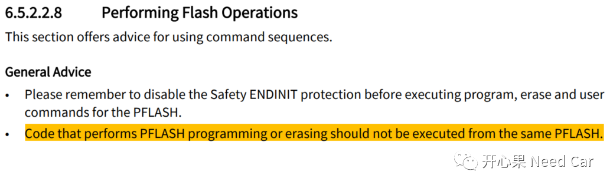
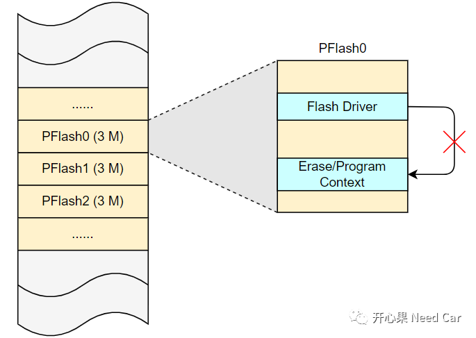
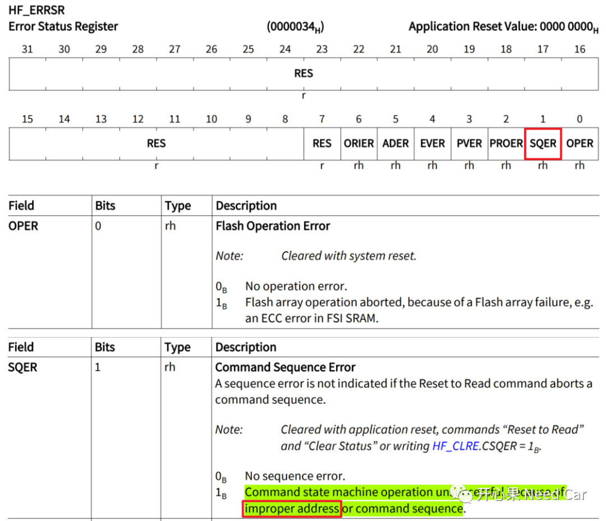
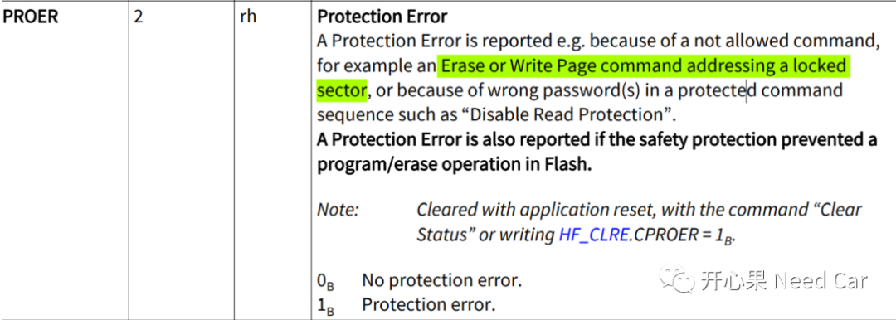
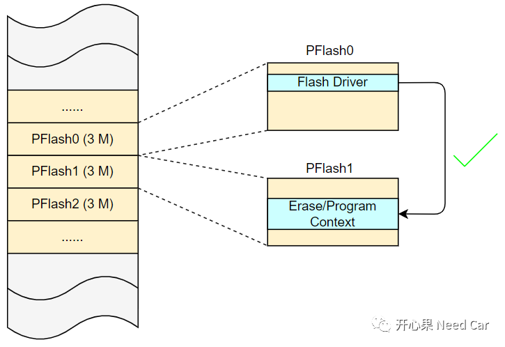

开心果 Need Car · 2022-10-14T16:52:00+08:00 · 微信原文
重要信息存储，工程项目中必不可少，不管信息存储到PFlash还是DFlash，一定要留心User’s Manual给的提示。本文，基于Aurix TC3xx，聊一聊Flash操作需要注意的点。
1、Flash Driver不能操作相同的Bank
怎么理解Flash Driver不能操作相同的Bank这件事呢？举例：如果Flash Driver存放到PFlash0，那么就不要调用Flash Driver对PFlash0的空间进行任何的擦/写操作。这一点，在英飞凌的User’s Manual有明确的提示，如下所示：


如果非要进行此操作，会带来什么问题呢？Flash的错误状态寄存器HF_ERRSR会记录命令时序错误（Command Sequence Error），即：因为访问了不恰当的地址，导致此错误，如下所示：

在Flash的操作中，如果识别到HF_ERRSR寄存器中错误状态，一般会让程序进入Trap。如果程序处于刷写状态，则意味着刷写流程的失败。
注意：虽然不允许Flash Driver操作相同Bank空间，但是，如果进行了此操作，也可能会有部分信息写入。
2、Flash 擦/写操作时，关闭"内狗"
这里的关闭"内狗"是指Safety ENDINIT操作，注意：这里不是Cpu Endinit操作。对于一些关键寄存器的操作，尤其写驱动的小伙伴，很容易混Safety ENDINIT和Cpu Endinit。
如果在Flash的擦/写操作期间，没有进行Safety ENDINIT操作，则会导致程序报Protection Error，对应HF_ERRSR寄存器的PROER位域，具体解释，如下所示：

做开发的小伙伴，应该都清楚：Bootloader升级时，需要将Flash Driver放到RAM区运行。问题：Flash Driver一定要放到RAM区才能运行吗？答：不是。
Flash Driver可以放在PFlash中运行，User’s Manual中给出的提示：不要用Flash Driver操作相同Bank空间。对于非Flash Driver的Bank空间，Flash Driver是可以操作的。eg：Flash Driver分布在PFlash0，Flash Driver可以操作非PFlash0空间（eg：PFlash1），如下所示：

Flash Driver操作PFlash的工程应用
工程中，一些诊断服务也会用到Flash Driver，比如：$14（ClearDiagnosticInformation）、$2E(WriteDataByIdentifier)等。诊断中，有一些关键信息需要存储到PFlash或者DFlash中。工程中，会利用$2E服务写一些关键信息到PFlash，比如：安全常量（Pin Code）、公钥（Public Key）等；会用$14服务清DTC信息，即:清除DFlash中的DTC信息。
往期精彩回顾